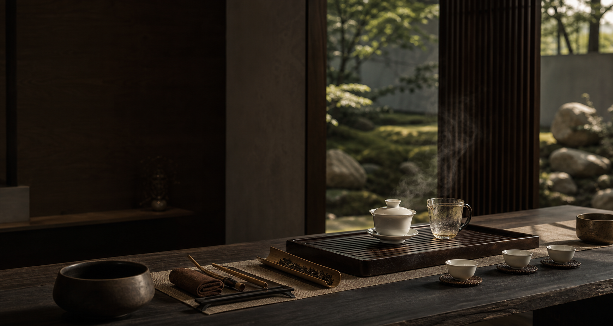

Question 01

Discover Your Tea / 尋找你的茶禪狀態
Find Your Chazen Profile
A calm AI-style tea reflection that reads mood, energy, ritual preference, and taste, then returns a personal tea profile and ritual.
不是心理診斷，而是一個用茶、呼吸與文化幫你覺察當下狀態的小儀式。
Question 1 of 10
10%
Your report is ready / 報告已準備好
Where should we save your tea profile?
Enter your email to unlock the personalized report. This demo stores your answers locally in your browser so it is easy to connect to email marketing later.
Your Chazen Profile / 你的茶禪狀態
Personal Reading
Profile Score
Main Tea
Flower Tea
Your Ritual
Chazen Tea State Reflection is a lifestyle and tea-culture guide. It does not provide medical, psychological, or health diagnosis.